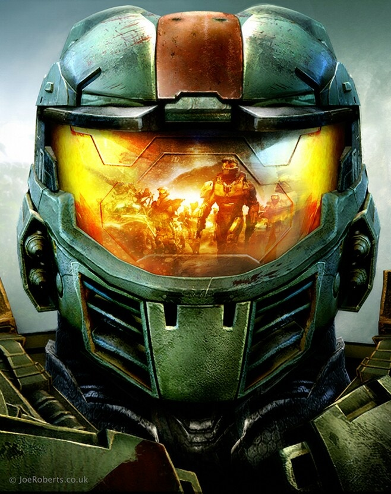
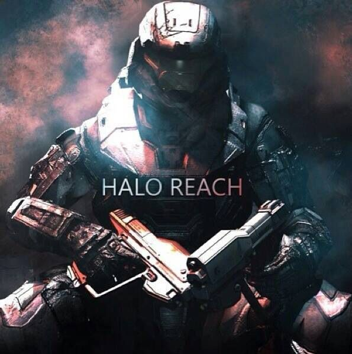
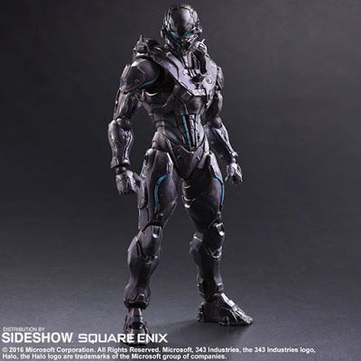

JHON-117
VIVO
HUMANO
El Suboficial Jefe Maestro John-117, [1] conocido como Jefe Maestro (Master Chief en inglés), es un
SPARTAN-II de la Armada del UNSC y el principal protagonista en el Universo de Halo. Ha servido como
uno
de los personajes más importantes en la Guerra Covenant y tiene cerca de 30 años de servicio activo
militar, además de poseer todas las condecoraciones que el UNSC ofrece, excepto la de "Prisionero de
Guerra".
En 2553, John fue declarado MIA (Missing in Action, o Desaparecido en acción) después de la Batalla
de
la Instalación 00, cuando él y el actual Inquisidor, Thel 'Vadam, dispararon la Instalación 08.
En 2557, John vuelve a la acción después de 4 años estando en sueño criogénico, enfrentándose al
Remanente Covenant y a los Forerunner.

JEROME-092
MUERTO
HUMANO
Fue uno de los niños con una asombrosa genética en que la Oficina de Inteligencia Naval y la Dra.
Catherine Halsey estaban interesados. Después de ser seleccionado, fue capturado y adoctrinado en el
Programa SPARTAN-II en 2517, tras muchos intentos de fuga, terminó convirtiéndose en un líder. [2]
En
2525, él y los demás candidatos fueron a una serie de aumentos para mejorar sus habilidades físicas
y
mentales. Jerome fue uno de los que sobrevivió y no fue muerto o lesionado durante el procedimiento.
Durante su entrenamiento, rápidamente se mostró como uno de los mejores resultados del programa.
Tanto
el Suboficial Mendez como la Dra. Catherine Halsey lo identificaron como uno de los cuatro líderes
emergentes Spartan, junto con Kurt-051, Frederic-104 y John-117.
INQUISIDOR
VIVO
SANGHEILI
El Inquisidor es el honor más alto entregado a un Sangheili del Covenant en tiempos de crisis.
Podría
considerarse el rango más alto en cuanto a religión de la sociedad Sangheili, estando solo por
debajo
del Consejero que es el rango más alto política y militarmente hablando. Este actúa como un general
en
el campo de batalla, realizando peligrosas misiones para los Profetas, tales como lo han sido la
Domesticación Lekgolo, la Rebelión Unggoy, la guerra contra los humanos y la más reciente amenaza
hereje
ocurrida durante los eventos de Halo 2.
CARTER-A259
MUERTO
HUMANO
El Comandante Carter-A259 fue un SPARTAN-III del UNSC. Fue el líder del Equipo NOBLE, un equipo de
élite
compuesto por Spartans que luchó principalmente durante la Caída de Reach. Su Distintivo de Llamada
en
el grupo era Noble Uno.

SPARTAN-B312
MUERTO
HUMANO
El Teniente SPARTAN-B312 [4] fue un SPARTAN-III adjunto al Grupo Tres del Comando Especial de Guerra
del
Ejército del UNSC. [1] Durante la Caída de Reach en el verano de 2552, se desempeñó como miembro del
Equipo Noble bajo el distintivo de "Noble Seis". [5] Debido a la naturaleza clasificada de sus
operaciones, B312 es desconocido para la mayoría de los militares del UNSC y la humanidad. Sin
embargo,
la Dra. Catherine Halsey declaró que B312 compartía la calificación de "hiper-letal" con sólo otro
Spartan [3] y que cumplió un papel esencial para asegurar la victoria de la humanidad en la Guerra
Covenant.

Jameson Locke
DESCONOCIDO
HUMANO
El Spartan Jameson Locke (Número de Servicio: 73808-3153-JL) [1] es un SPARTAN-IV y antiguo agente
de la
Oficina de Inteligencia Naval. Antes de ser un Spartan, Locke sirvió como especialista en
adquisiciones,
inteligencia, recuperación importante de objetos de las manos enemigas así como seguimiento y
asesinato
de objetivos de alto valor. James Locke es ágil para resolver un rango de complicadas situaciones
tanto
con su cerebro como con sus habilidades de combate.